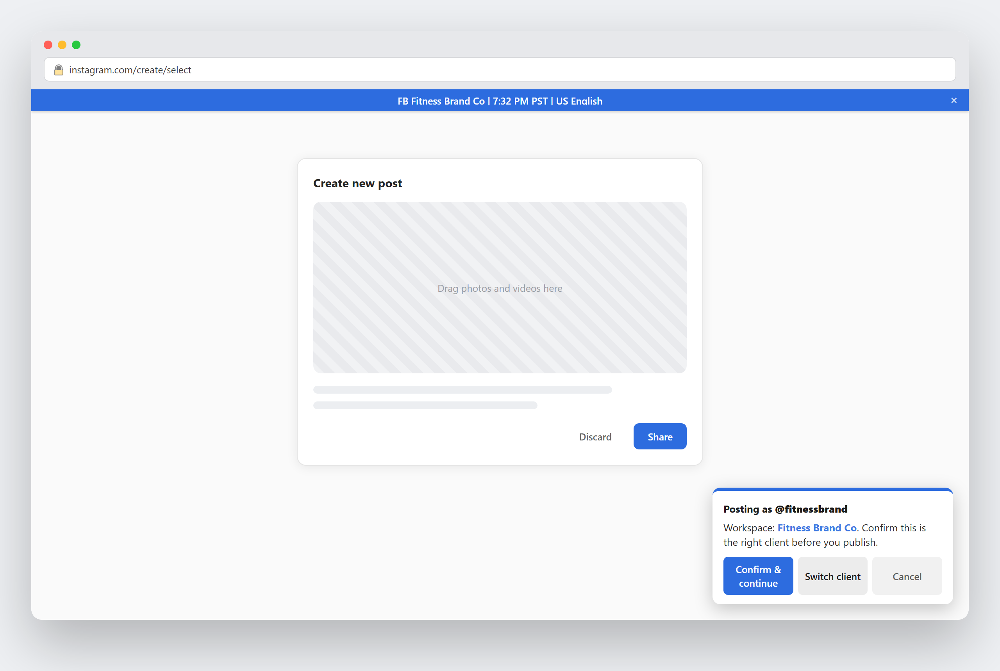
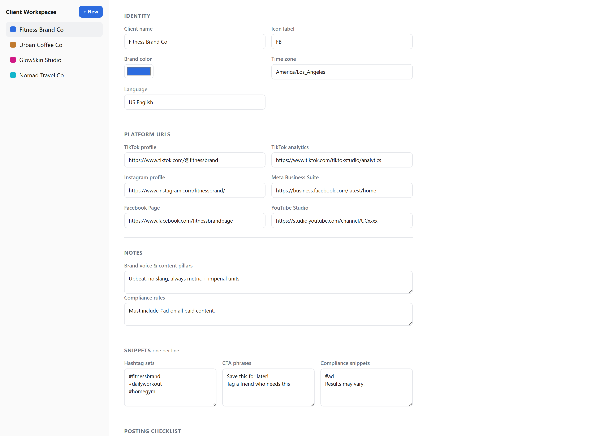

For agencies, freelancers & social teams
Never post from the wrong client account again.
Social Client Cockpit keeps every client's social accounts organized in the browser — color-coded workspaces, one-click tab launch, and a gentle safety check right before you hit publish.
Manifest V3 · Runs entirely in your browser · No account required

Dozens of tabs, no labels
TikTok, Instagram, Meta Business Suite, YouTube Studio, Canva, Notion — one client bleeds into the next.
One wrong-account post
It only takes one mixed-up tab to post a client's content on the wrong brand's account.
Teams across time zones
Remembering who's awake where, and in what language, shouldn't live in a spreadsheet.
Launch Pad
Open every client's tabs with one click.
Each workspace stores that client's TikTok, Instagram, Facebook, YouTube, LinkedIn and tool links (Canva, Notion, Drive). Hit "Open" and they launch together as a color-coded tab group — no more hunting through bookmarks.
- Color-coded tab groups per client
- Local time & language shown at a glance
- Brand-voice notes right in the popup

Identity bar & posting safety check
A quiet reminder, right when it matters most.
A small colored bar shows which client you're working on across every matched tab. On post/upload pages, a confirmation card names the workspace before you publish — one click to confirm, one click to switch clients if something's off.
- Detects composer & upload pages automatically
- Never blocks editing — just a quick check before you publish
- Dismissible, and fully optional per workspace
Workspace manager
Everything about a client, in one place.
Platform links, brand color, time zone, brand-voice notes, hashtag sets, CTAs, compliance snippets, and a per-client posting checklist — all editable from one screen, synced across your devices.
- Hashtag & CTA snippets, one click to copy
- Custom posting checklist per client
- Syncs via your browser profile — no separate login

How it works
Set up once. Switch clients in a click.
Create a workspace
Add a client's name, brand color, platform links and notes in the options page.
Open it from the popup
All of that client's tabs launch together, grouped and color-coded.
Work with confidence
The identity bar and safety check keep you certain which client you're on — right up to the moment you publish.
Your client data stays yours.
Social Client Cockpit doesn't have a server, doesn't send your data anywhere, and doesn't require an account. Workspace details are stored in your browser's own extension storage and synced only through your existing Google/Chrome profile — the same way your bookmarks sync.